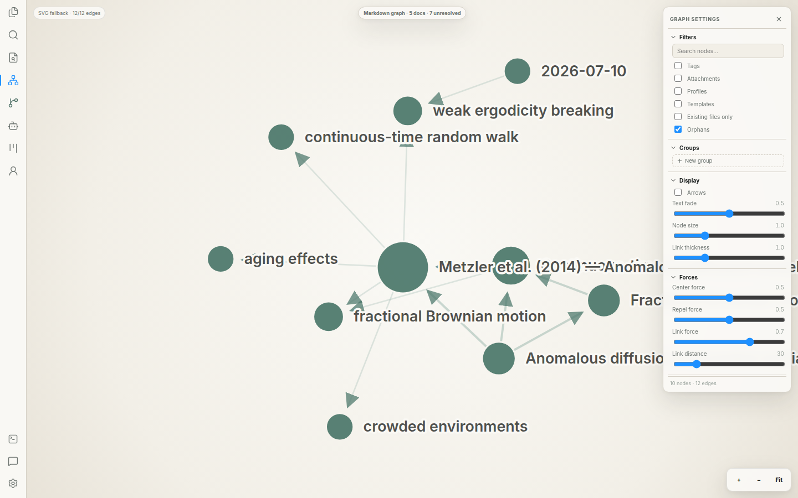

기존 연구 폴더를 엽니다.
Markdown, 코드, 데이터와 Git 저장소는 원래 위치에 남습니다. Asterelle은 프로젝트 경계와 연결을 읽습니다.
Research environment for people and agents
오래 멈춘 연구도, 맥락을 다시 복원하느라 시간을 쓰지 않고 이어서 시작하세요.
개인 연구자를 위한 연구 슈퍼앱 · 기존 Markdown과 Git을 그대로 사용 · macOS, Windows, Linux
새 파일 형식도, 또 하나의 채팅 기록도 아닙니다. 프로젝트의 맥락과 AI 작업, 사람의 결정을 함께 남깁니다.

00 · The workbench
노트, 코드, 수식, Git, 작업 보드와 연구 에이전트가 하나의 프로젝트 경계 안에서 이어집니다.

01 · How it works
기존 파일을 가져오거나 전용 형식으로 바꾸지 않습니다. Asterelle은 현재 워크스페이스를 읽고, 다음 판단까지 이어지는 흐름을 만듭니다.
어느 연구자의 아침
지난주에 멈춘 분석 프로젝트를 엽니다. Observatory가 최근 변화와 야간 검증 결과를 모아 보여줍니다. 연구자는 Git 근거를 확인하고, 필요한 후속 작업을 Mates에 맡긴 뒤, 신뢰한 결과만 프로젝트 기록으로 승격합니다.
Markdown, 코드, 데이터와 Git 저장소는 원래 위치에 남습니다. Asterelle은 프로젝트 경계와 연결을 읽습니다.
Observatory에서 프로젝트 변화, 막힌 작업, 야간 결과와 결정 대기 항목을 근거와 함께 봅니다.
파일, 노트북과 터미널에서 이어서 작업하거나 Mates에 프로젝트 범위가 정해진 일을 위임합니다.
제안된 변경, 실행 기록, 파일과 Git 근거, 작성자와 검증 상태를 하나의 검토 항목에서 확인합니다.
승인한 후보만 정본 연구 상태로 들어갑니다. 기각과 보류도 판단 이력으로 남습니다.
02 · One research system
Constellation무엇이 무엇과 닿아 있는지 봅니다.
Markdown에 이미 존재하는 링크에서 논문, 개념, 방법, 주장과 프로젝트의 관계를 그립니다. 인덱스는 다시 만들 수 있고, 원본 노트는 평범한 파일로 남습니다.
Files & Workbench읽는 곳과 실행하는 곳을 가깝게 둡니다.
Scientific Markdown, 코드, 노트북, 터미널, Git과 작업 보드가 같은 프로젝트 경계를 따릅니다. 로컬과 SSH 워크스페이스에서도 범위가 화면에 드러납니다.
Mates역할과 관계가 보이는 연구 동료들.
프로젝트 에이전트는 명시된 위임 경로를 따라 준비하고 검토하고 검증합니다. 작업 진행과 실행 기록은 대화가 끝난 뒤에도 남습니다.
Observatory오늘 판단할 일이 한곳에 도착합니다.
모든 프로젝트의 신호, 야간 결과와 연결 후보를 근거와 함께 모아 보여줍니다. 어떤 결과도 조용한 자동 편집으로 들어오지 않습니다.
03 · One environment, many models
이미 사용 중인 모델 접근 권한을 가져오세요. Asterelle은 역할별 모델을 하나의 프로젝트 맥락에 연결하고, 모든 결과에 같은 근거와 검토 규칙을 적용합니다.
01 / BRING
기존 Claude Code·Codex 접근 권한과 설정된 로컬·원격 provider를 연결해 하나의 모델 회사에 연구 흐름 전체를 맡기지 않습니다.
02 / ASSIGN
조율, 코딩, 독해, 요약, 야간 준비와 독립 검증에 서로 다른 모델을 사용할 수 있습니다.
03 / CONTINUE
모델을 바꿔도 작업, 실행 기록, 근거 참조와 프로젝트 경계는 사라지지 않습니다.
04 / CONTROL
반복적이거나 민감한 준비 작업은 설정에 따라 로컬에 두고, 필요한 작업에만 강한 원격 모델을 사용합니다.
모델 가용성과 데이터 처리는 연구자가 설정한 provider와 locality 정책을 따릅니다. fallback 결과가 정본 연구 기록으로 자동 승격되지는 않습니다.
04 · How it earns trust
05 · Private beta
Asterelle은 소수의 개인 연구자와 실제 연구 워크스페이스에서 테스트하고 있습니다. 신청하면 사용 환경을 확인한 뒤 적합한 데스크톱 빌드와 시작 방법을 안내합니다.
06 · FAQ
더 확인하고 싶은 점이 있나요? 직접 문의해 주세요.
07 · Where Asterelle is going
아래 항목은 현재 기능이 아니라 탐색 중인 제품 방향입니다. 개인용·로컬 중심 워크스페이스는 계속 제품의 기반으로 남습니다.
Exploring
논문 수집, 메타데이터, 인용, 주석과 편안한 읽기 모드를 연구 노트와 작성 흐름까지 연결합니다.
Exploring
주장, 데이터, 실행과 문서 사이의 출처 관계를 더 정밀하게 기록하고 재현 가능성을 확인합니다.
Exploring
개인 워크스페이스를 포기하지 않고, 연구실이 프로젝트·리뷰·역할과 감사 가능한 결정을 공유하는 협업 계층을 탐색합니다.
Roadmap은 출시 약속이 아니며, 실제 연구자 인터뷰와 사용 검증을 거쳐 구현 범위가 결정됩니다.